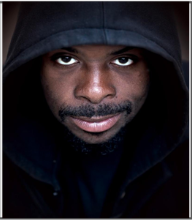
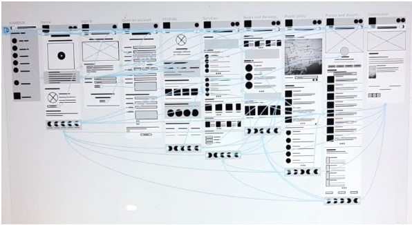
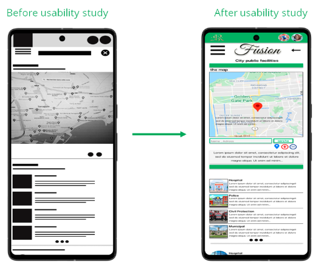
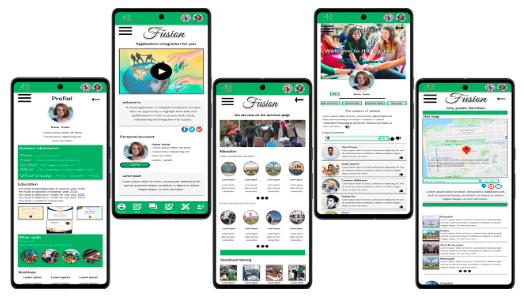

Diseñando una experiencia alimentaria inteligente, accesible y centrada en el usuario.
Muchos usuarios tienen dificultades para gestionar su alimentación diaria debido a la falta de tiempo, compromisos personales y limitaciones de accesibilidad. Además, la mayoría de las aplicaciones actuales no tienen en cuenta necesidades específicas como la discapacidad o los hábitos alimenticios saludables.
Crear una aplicación inclusiva y fácil de usar que permita a los usuarios pedir comida de forma rápida, personalizada y adaptada a sus necesidades, mejorando su calidad de vida.
El producto está diseñado para diferentes perfiles de usuario, incluyendo personas con discapacidad, usuarios con estilos de vida activos y personas con horarios ocupados.

Goal: Providing a platform or means for sharing talents and integrating into society
Problem:Rania needs to integrate into society and return to her social activities.

Objetivo: I am looking for a field to pursue my interests, and training to get a job opportunity.
Problema: cannot engage in his social and sports activities. He is looking for a job or training opportunity
Se realizó una investigación centrada en el usuario, incluyendo entrevistas y análisis de comportamiento. Los resultados mostraron que el problema no es solo la falta de tiempo, sino también la dificultad de acceso a opciones saludables y la falta de personalización en las aplicaciones existentes.
El proceso se basó en una metodología centrada en el usuario, incluyendo: Investigación → Wireframes → Prototipo → Test de usabilidad → Iteración.
Se realizaron dos rondas de pruebas. La primera permitió mejorar la navegación y simplificar el proceso de pedido. La segunda ayudó a optimizar el flujo de compra y añadir opciones de personalización.



El resultado es una aplicación intuitiva, accesible y eficiente que permite a los usuarios pedir comida rápidamente, con opciones de personalización y adaptaciones para diferentes necesidades.

Fusion App mejora significativamente la experiencia de los usuarios al ofrecer una solución rápida, accesible y centrada en sus necesidades reales, destacando frente a otras aplicaciones del mercado.
Construyamos algo increíble juntos.